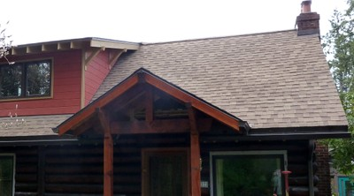

Wooden and asphalt shingles [RMT7]
Wooden shingles are usually split wood, overlapping and fastened to wood battens. Wooden shingles are usually made of cedar, redwood, hardwood etc. Asphalt shingles are small overlapping sheets of asphalt, usually fastened to a plywood sheet substrate. An alternative form is made of glass fiber or polyester fleece impregnated with bituminous material (tar, asphaltic bitumen).

Wooden shingles, USA (S. Brzev)

Asphalt shingles, Canada (S. Brzev)